MIP index¶
Design docs for non-trivial changes, written before they're built. The process and template live
in the mip skill (.claude/skills/mip/SKILL.md); this file is the index. Statuses: Draft →
Accepted → Implemented (or Rejected / Superseded). A MIP built in stages before every task lands
carries Partially implemented (tasks a–b of N — #PR #PR), naming exactly which tasks are done and
what's still missing in its own status row — never a bare "Implemented" until the whole task list
(MIP-NNNN.tasks.md, when it exists) is merged.
Reading the table. Effort and Gain are the one-line summary of each MIP's own metadata block
(right after its title table) — read that block for the full reasoning, the Depends on/Risk
detail, and the exact Cost so far sourcing. Verdict is the Effort vs Gain call from that same
block: do next (build it now), do when X lands (blocked on a named prerequisite), cheap win
(small effort, ships on its own), expensive, defer (real value, not worth the cost yet), or park
(needs a precondition — usually accumulated data or a later phase — that doesn't exist yet). Cost
so far is the summed Cost: trailers of a MIP's merged PRs (implementation and, where traceable,
the MIP's own drafting commit); "—" means nothing has merged for it yet, "n/a" means something
merged but carries no usable Cost: figure (predates the trailer convention, or the trailer was left
as an unfilled placeholder).
| MIP | Title | Status | Created | Effort | Gain | Verdict | Cost so far |
|---|---|---|---|---|---|---|---|
| MIP-0001 | Bathing-water quality in the ranking, and a sea-lore paragraph in every reply | Implemented | 2026-09-05 | M | user value | cheap win (delivered) | n/a |
| MIP-0002 | The Telegram bot — marola's first real user surface | Draft | 2026-09-05 | L | user value | do next | — |
| MIP-0003 | Replies in under three seconds — caching, concurrent fetches, precomputed boards | Draft | 2026-09-05 | M | infra/dev-loop; cost/ops | do next | — |
| MIP-0004 | The reason to come back — daily digest, subscriptions, and reach beyond Santa Catarina | Draft | 2026-09-05 | L | user value | do when X lands | — |
| MIP-0005 | The map — every beach's daily recommendation on a static site the pipeline feeds | Implemented | 2026-09-05 | L | user value; cost/ops | cheap win (delivered) | ~$12.46 |
| MIP-0006 | "How does it look right now?" — a live look at each beach, fed by users' cameras | Draft | 2026-09-05 | XL | user value | do when X lands | ~$0.7 (shared w/ MIP-0007) |
| MIP-0007 | Time-series foundation models for marola's own series — local open models first | Draft | 2026-09-05 | L | infra/dev-loop | park | ~$0.7 (shared w/ MIP-0006) |
| MIP-0008 | Docker images — lightweight JVM, native (GraalVM), marola-ollama, a fine-tuned variant — built in CI, with a smoke test the map shows | Implemented | 2026-09-05 | XL | infra/dev-loop; cost/ops | cheap win (delivered) | ~$15.98 |
| MIP-0009 | A richer map — a wave marker per beach and, on hover, every aspect at that point (wind with an emoji, whales, jellyfish, water temperature) | Implemented (tasks: MIP-0009.tasks.md, 4 PRs #144-#147) |
2026-09-05 | S | user value | cheap win (delivered) | ~$3.18 (shared bucket) |
| MIP-0010 | MLflow as marola's experiment ledger — benchmark runs, prompt compiles and LLM traces, local server first | Implemented (v1, local only) | 2026-09-05 | L | infra/dev-loop | cheap win (delivered) | ~$16.52 |
| MIP-0011 | Claude Code best practices in this repository — hooks as gates, a shared permission allowlist, path-scoped rules, subagents and skills | Implemented, ultrareview-verified 2026-09-06 | 2026-09-05 | M | infra/dev-loop; cost/ops | cheap win (delivered) | ~$12.86 |
| MIP-0012 | llm4s as marola's Scala-native LLM/agent layer (opt-in module behind marola's traits) — and the deprecation of the Python DSPy step for a Scala prompt compiler | Draft | 2026-09-05 | XL | infra/dev-loop | do when X lands | n/a |
| MIP-0013 | OpenCode as marola's development agent — a bounded tryout, and what replacing Claude Code would take | Partially implemented (tasks 1-2 of 6 — PR #197, MIP-0013.tasks.md) |
2026-09-05 | S | infra/dev-loop | cheap win | ~289k tok (unpriced) |
| MIP-0014 | A marola book — The Compiler Pushes Back, written in LaTeX, versioned in a repo, built in CI | Draft | 2026-09-05 | XL | community/outreach | expensive, defer | — |
| MIP-0015 | Interação — opt-in "who else is swimming here" matching between marola users | Draft | 2026-09-05 | L | user value | park | — |
| MIP-0016 | Water-quality points on the map — OK / not-OK marks, placed in the sea off the OSM coastline, not on the land where the agency and OSM centres put them | Draft | 2026-09-06 | M | user value | do next | — |
| MIP-0017 | Agentic tooling ideas from ai-job-search and September 2026's trending agent repos |
Draft | 2026-09-06 | S | infra/dev-loop | cheap win (§5.1/§5.2); §5.3 no urgency | — |
| MIP-0018 | Marola self-documentation — weekly post-planner and multi-platform exporter (LinkedIn, blog repo, Substack, Reddit) | Draft | 2026-09-06 | M | infra/dev-loop | cheap win | — |
| MIP-0019 | arXiv/trending-repo survey — sea-forecasting and jellyfish-prediction techniques for marola | Draft | 2026-09-06 | S/M/L (per §5 item) | user value | cheap win (§5.1); do when X lands (§5.2); park (§5.3) | — |
| MIP-0020 | An Instagram account for marola — first post by hand, then API publishing (Instagram Login: professional account, JPEG at a public URL, no Facebook Page, no App Review for an owned account), then a daily pipeline rendered from the board and gated by a GitHub Environment approval (absorbed the former MIP-0024 draft) | Draft | 2026-09-06 | M | community/outreach; infra/dev-loop | cheap win (v1: post by hand) / do when MIP-0018 lands (API path) | — |
| MIP-0021 | Beach accessibility — parking, toilets, showers and lifeguard posts from OSM, shown only where the data exists ("no data", never "none") | Implemented — merged via PR #202 | 2026-09-06 | S | user value | cheap win (delivered) | — |
| MIP-0022 | The safety footer — every answer grounded in a knowledge/safety/ document ends with lifeguard/193/SAMU 192, appended after the model, never by it |
Implemented — merged via PR #195 | 2026-09-06 | S | user value | cheap win (delivered) | ~$73.38 |
| MIP-0023 | Product expansion — a wait-list, honest promotion, and the easiest way to keep marola's site and backend maintained | Draft | 2026-09-06 | S/M/L (per §5 item) | user value; infra/dev-loop; cost/ops | cheap win (§5.1/§5.3); do when X lands (§5.2) | — |
| MIP-0024 | The daily Instagram pipeline — automated, per-day content on top of MIP-0020's account | Superseded by MIP-0020, which absorbed the draft; the file was never written | 2026-09-06 | S (on top of MIP-0020) | user value; cost/ops | do when X lands | — |
| MIP-0025 | marola-sea-1.0 — a small domain-tuned model (QLoRA SFT + tool-call SFT + DPO) served through Ollama | Partially implemented (tasks 1-5 of 6 — PRs #192, #211, #210, #209, #228, #206) | 2026-09-06 | M | user value | do next (task 1); do when X lands (tasks 2-6) | — |
| MIP-0029 | Positioning — marola as the ocean intelligence layer; "best hour to swim" as its first use case | Implemented — merged via PR #179 | 2026-09-06 | S | user value; community/outreach | cheap win (delivered) | — |
| MIP-0030 | Coastal and lakeside trails on the map — named OSM paths within 500m of a beach or a lake, via Overpass (not IMA/SC's per-region pattern) | Accepted — implemented, pending merge on mip-0030/1-coastal-trails |
2026-09-06 | S | user value | cheap win | — |
| MIP-0031 | Water quality for Rio (INEA) and Bahia (INEMA) — PDF bulletin parsing plus a curated point-coordinate table, since neither institute publishes a JSON feed or coordinates | Partially implemented (tasks 1-4 of 6 — PRs #200, #203, MIP-0031.tasks.md) |
2026-09-06 | M | user value | do next (tasks 5-6: client wiring) | — |
| MIP-0032 | The model × strategy benchmark matrix — closed API vs. open local vs. marola-RAG vs. marola-tuned on the same questions, with latency and cost columns; local rows free and gated, paid rows opt-in per run | Draft | 2026-09-06 | M | infra/dev-loop; cost/ops | do next (free half) / do when X lands (paid arm: human go-ahead + key) | — |
| MIP-0033 | Release 0 — the repo goes public, a self-hosted chatbot (Ollama + Cloudflare Tunnel, graceful offline state), the first Hugging Face-published model, and a new Milestones/Releases doc linking MIPs to a named release | Partially implemented (§5.2 of 6 — PR #196, #229) | 2026-09-06 | L | user value; community/outreach; infra/dev-loop | do next (§5.1, §5.3, §5.4) | — |
| MIP-0034 | RSS in and RSS out — INMET's live warning feed as an expiring alert banner, a reading queue that feeds corpus-doc instead of the index, and marola's own Atom feed on the site |
Draft | 2026-09-07 | S/M/L (per §5 item) | user value; infra/dev-loop | cheap win (§5.6 outbound, §5.3 reading queue); do next (§5.2 INMET alerts); park (§5.5 transcripts, §5.7b); reject (auto-ingest into knowledge/) |
— |
| MIP-0035 | A plugin API for marola's map — a windy-plugin-template-style third-party JS layer, loaded client-side via a committed plugins.json manifest; confirmed it needs no move off GitHub Pages. Scoped as a Release 1 item, after MIP-0033's Release 0 |
Accepted — implemented, pending merge on mip-0035/1-plugin-api |
2026-09-07 | M | user value; community/outreach; infra/dev-loop | do next (after Release 0) | — |
| MIP-0036 | Marola Advertising Action (MAA) — the Release 0 launch, channel by channel (LinkedIn personal + org Page, Reddit, YouTube, Instagram via MIP-0020, Medium, Substack), staggered over eight days, and how to sustain it after (handed to MIP-0018) | Draft | 2026-09-07 | M | community/outreach; infra/dev-loop | do when MIP-0033 lands | — |
| MIP-0037 | A PWA for marola's map — a service worker caches the app shell and the last board so a flaky-signal beach visit stays usable, offline shown honestly, not hidden (ROADMAP.md §7 K8) | Draft | 2026-09-07 | S | user value; infra/dev-loop | cheap win | — |
| MIP-0038 | Model spread — when the wave models disagree, marola says so instead of picking one: models= on the marine call it already makes, a deterministic agreed/mixed/split word, the score untouched |
Draft | 2026-09-07 | M | user value | do next | — |
| MIP-0039 | The fact guard — a deterministic check that the model's sentence only says what the numbers say, applied after the model like MIP-0022's footer, never by it | Draft | 2026-09-07 | M | user value | do next | — |
| MIP-0040 | The reviewer has never been validated — pin its decoding, measure it with Cohen's kappa against human labels, then make it a jury of small local models from disjoint families | Draft | 2026-09-07 | M | infra/dev-loop | do next (§5.1 fix + measurement) / do when X lands (the jury) | — |
| MIP-0041 | Soft book ingestion — a maintainer dev-tool distilling short, page-cited candidate principles from a book (first run: Weinberg's The Psychology of Computer Programming), classified knowledge vs. agentic-behavior, never auto-applied to AGENTS.md/rule files | Draft | 2026-09-07 | M | infra/dev-loop | cheap win | — |
| MIP-0042 | marola.dev/v2 — a map that computes live in the visitor's browser (Open-Meteo is CORS-open; Overpass and the water-quality bulletins are not, so beaches and water stay precomputed), with today's static map frozen at /v1/ and kept as v2's fallback |
Draft | 2026-09-07 | L — a Scala.js cross-build of the scorer (this repo's first JS build target), a second client tree, and a site.yml that publishes both; re-rated from M once §4.4 established the scorer cannot be hand-ported to JavaScript without duplicating safety-relevant logic |
user value; infra/dev-loop; cost/ops | do next (§5.1's v1 freeze) / do when the Scala.js cross-build proves out (§5.3–§5.4) | — |
| MIP-0043 | docs/4-Research-and-plans/AWESOME-AGENTIC-ENGINEERING.md — a curated awesome-list of agentic-engineering tooling plus a human-gated candidate digest script, and a verified "top 10 repos similar to marola" section |
Implemented — merged via PR #222 | 2026-09-07 | S | community/outreach; infra/dev-loop | cheap win (delivered) | — |
| MIP-0044 | marola.dev becomes a site, not just a map — news, a markdown dev blog, generated Scala/Python API docs, a feeds page, about/contact, and a restrained support page | Partially implemented (§5.6 — #300, #306, rebuilt by MIP-0064); accepted 2026-09-28 for tasks 1–2 of MIP-0044.tasks.md (the §5.7 menu, the §5.1 generator) |
2026-09-07 | XL — a page generator, a nav, a markdown pipeline, two documentation toolchains and a new CI workflow, editing five load-bearing pieces of the existing site machinery at once | user value; community/outreach; infra/dev-loop | do next (§5.7 menu, §5.1–§5.3); do when MIP-0034 lands (§5.4 feeds page); §5.5 and §5.6 done by #300/#306 and MIP-0064 | — |
| MIP-0045 | Classic NLP and parsing where an LLM call is currently paying for it — a survey of marola's product pipeline and its own dev loop | Draft | 2026-09-07 | M — one new KnowledgeStore in core (no new dependency), one benchmark arm, one script change; re-rated from S after §4's probe |
cost/ops; infra/dev-loop | cheap win (§5.1, §5.2); do next (§5.4); park (§5.3) | — |
| MIP-0046 | The map without the generated look — a chart-derived icon set replacing every emoji on the page | Accepted 2026-09-28 — two tasks in MIP-0046.tasks.md; the §5.6 chip option is decided in the acceptance PR |
2026-09-07 | M — three site files plus scripts/site_check.js, whose emoji assertions are a just quality-other gate and have to move in lockstep; "done" needs a browser at 390/1280 px, not only the stub harness |
user value; infra/dev-loop | do next — self-contained, and it wants to land before MIP-0042 freezes today's client at /v1/ |
— |
| MIP-0047 | Equation-drawn art — Desmos as the sketchpad, the equation as the source, static SVG as the only thing shipped (five sea motifs; no third-party script, no Desmos-exported file, no build step) | Draft | 2026-09-07 | S — one stdlib Python generator with a --self-test, one equations file, a generated <symbol> block in MIP-0046's sprite; the authoring is hours of human eye-work but not build effort |
user value; infra/dev-loop | do when MIP-0046 lands | — |
| MIP-0048 | Scaling marola-sea — which model, which checkpoint, which hardware, and the data ceiling | Draft | 2026-09-07 | M | user value; infra/dev-loop | do next (4B/7B); park 27B | — |
| MIP-0049 | Scala for the web layer — Tyrian, Laminar, ScalaTags, or better plain-JS discipline | Draft | 2026-09-08 | Per option: S for server-side HTML, L for a Scala.js view layer (a JS build target, a bundle, and a replacement for site_check.js), XL for both |
infra/dev-loop; user value only indirectly | cheap win (server-side HTML); do when MIP-0042's cross-build proves out (the client layer); reject a game engine | — |
| MIP-0050 | Manacá-1B and the Brazilian-Portuguese models — a base to fine-tune, not a model to drop in | Draft | 2026-09-09 | M for the evaluation arm (a preset row, a GGUF pull, a benchmark arm); L for fine-tuning on a Manacá base (a unigram-tokenizer conversion path, and a corpus that is currently English) | user value (the audience is Brazilian, the output is English); infra/dev-loop (a PT-native 1.7B base beats SmolLM2-360M) | do next (the evaluation arm — MIP-0048 needs the number anyway); do when the corpus is Portuguese (the fine-tune); reject Sabiá-7B on licensing | — |
| MIP-0051 | Which wave model is marola quoting? — a labelled multi-model ensemble, and the road to our own grid | Draft | 2026-09-10 | M for the ensemble (one query parameter, one enum, a median — no new call, no new dependency) and M for the buoy ledger; L for running our own nearshore grid (designed, not built) |
user value (marola quotes one model as fact; at Jurerê that number ranges 0.20–1.34 m depending which you ask); infra/dev-loop (a buoy-scored ledger makes forecast quality a weekly number instead of an opinion) | do next (the ensemble and the ledger — the disagreement is measured and crosses live scoring thresholds); do when the ledger has a season (our own grid) | — |
| MIP-0052 | Should marola ever run its own wave model, and in what language? — a costed survey | Draft | 2026-09-10 | S for this MIP (it is a survey whose deliverable is a decision); the thing it surveys is XL and out of marola's tree — the attached plan estimates 7–12 months solo with ~40% stall risk | infra/dev-loop (a costed answer, with a named trigger, to a question that will otherwise keep resurfacing) | park — marola's target 1.1 km nest is ~87 core-hours per cycle and needs no port; revisit only if 550 m proves necessary, and only after MIP-0051's buoy ledger says nearshore resolution is the binding error | — |
| MIP-0053 | A learned local correction, not another model — statistical downscaling of the public wave forecasts | Draft | 2026-09-10 | M — an offline Python trainer, a JSON artefact of coefficients, and a deterministic Scala applier; the dspy/ pattern, no runtime Python, no GPU, no new dependency |
user value (a 6.7× model disagreement at Jurerê fixed in days rather than months); infra/dev-loop (MIP-0051's buoy ledger becomes a training set, so the same data earns twice) | do next for the offshore correction; park the sheltered-bay correction that motivated it — there is no local observation to train on, and no model form fixes a missing dataset | — |
| MIP-0054 | Portuguese first — marola's whole user-facing experience in pt-BR, with a language choice that sticks and a location-aware default. Release blocker: Release 0 (MIP-0033) does not ship until this lands | Accepted 2026-09-28 for tasks 1–3 of MIP-0054.tasks.md (the site's half, then note codes) — release blocker |
2026-09-12 | XL — a message catalog in two runtimes (Scala for CLI/MCP/board, JS for the site), a board-contract change (codes, not English prose), a pt-BR corpus with per-file sources, a pt-BR DSPy recompile of both prompts, a deterministic language guard, a rewrite of scripts/site_check.js's copy assertions, and a language/location precedence in the client; no new dependency |
user value (the audience is Brazilian, every surface but the safety footer answers in English); infra/dev-loop (one catalog file per language instead of strings scattered over four places) | do next — a declared release blocker, and §4.3 shows the default model can do it; nothing in it waits on another MIP | — |
| MIP-0055 | A vector store behind KnowledgeStore, and a chunker that knows what kind of ocean knowledge it is cutting — Lucene HNSW + BM25 as the local store, typed chunks with provenance, a golden-set recall@k |
Draft | 2026-09-13 | L — one new dependency (Lucene) and one new KnowledgeStore in local/, a typed chunk record and kind-aware chunker in core/, an offline ingest pass, a golden set; no new module, no CI workflow |
user value (right passage cited, in either language, for a corpus about to grow); infra/dev-loop (recall@k makes chunking/embedder changes a number) | do next (what MIP-0054's pt-BR corpus and MIP-0032's RAG arm need) | — |
| MIP-0056 | OODS — an Open Ocean Data Store for Brazilian bathing-water quality: git-versioned raw + Parquet under data/oods/, one adapter per institute, a DuckDB common view, a daily idempotent ingest workflow; IMA/SC first, from the portal's 2003→today per-beach CSV export |
Draft (tasks: MIP-0056.tasks.md) |
2026-09-14 | L — a new oods/ sbt module, one dependency (DuckDB JDBC) in it alone, a committing CI workflow, a .gitignore carve-out and a one-off ~40 MB data PR |
user value (23 years of per-point history where today there are five samples); infra/dev-loop (the store is the map's fallback when the portal is down); cost/ops (a public dataset queryable without marola) | do next — the source is verified live, richer than what the app uses, free; the app payoff is one env var | — |
| MIP-0057 | GCP as an opt-in cloud backend — a service-by-service review (Vertex AI/Gemini, Google Maps Platform, Firestore, Cloud Vision, Cloud Logging/Trace) for each pluggable integration; recommends a single low-risk gcp/ LLM-only slice if any, commits to no build |
Draft | 2026-09-15 | S for the MIP itself; M for the recommended slice if built | infra/dev-loop; cost/ops | do when X lands — no urgency, a comparison for whenever a second LLM vendor is wanted | — |
| MIP-0058 | A credited human artist — Daniela Vicentini's paintings on marola.dev, verified Instagram/atelier links and an "arte terapia" thanks credit on about.html; embedding actual paintings is designed but not built, pending real files from the artist |
Draft | 2026-09-15 | S for the credit; S/M for artwork embedding once files exist (not built) | user value | do next for the credit; park for artwork embedding until files are delivered | — |
| MIP-0059 | Jev (TypeSafe AI) as an opt-in typed-decision backend — a DecisionClient trait (Choice / Score / Noul) with the local Ollama/deterministic path as default and Jev opt-in behind MAROLA_DECISION_PROVIDER=jev; bootstraps on the benchmark judge and RAG reranking, never on swim-safety scoring. No free tier: early-access waitlist, $0.042/MTok in, output free |
Draft | 2026-09-19 | M — one trait, two impls, an AppConfig factory, direct HTTP (no Scala SDK exists) |
infra/dev-loop; cost/ops | cheap win for the two offline uses; do when Phase 1 lands for anything user-facing | — |
| MIP-0060 | Open Code Review on request, on marola's own runners — alibaba/open-code-review (Apache-2.0 Go CLI) run only when asked (just ocr-review / workflow_dispatch), Nix-pinned via nix-config labs/agentic, run inside ai-jail without the GitHub token against local Ollama by default, one advisory COMMENT review posted by a separate step; never a required check; hosted LLM is opt-in and gated. Adds a fourth on-request route to DEV-FLOW.md §5 |
Partially implemented (task 1 of 3 — #391) | 2026-09-19 | L by the rubric (a CI workflow), small in lines; plus one upstream nix-config PR (ocr package, jail-run ocr) |
infra/dev-loop; cost/ops | park after task 1 (7B local model unusable); cheap win once a model passes §7.1 incl. a Scala PR | — |
| MIP-0062 | Ressaca — a deterministic storm-surge hazard in Swimability: a veto at the wave height at which the Navy issues a ressaca warning (2.5 m, reported, not yet read at source), a labelled heuristic watch note when a spring tide and a strong southerly wind line up below that, and a curated per-beach erosion-record note from the published S2ID analysis (Dutra et al., UFSC, 13 Florianópolis beaches, 2010–2022). Prompted by a video essay whose own figures are unsourced and therefore not used. No new dependency or network call; no model involved |
Draft | 2026-09-19 | M — one function family in scoring/, a moon-phase helper, a data file, a knowledge page |
user value | do next | — |
| MIP-0063 | A GitHub-native tracking standard — issues as the unit of work (stories and tasks, with native sub-issues), milestones as deliverables rather than a sequence, one org project board, native issue dependencies at every level — between issues and between sub-issues of the same parent — derived from the depends on column rather than drawn by hand, and a five-rule Definition of Ready (agent-ready) that gates what an agent may pick up. Adds scripts/issues.sh + a .github/labels.yml manifest, four issue forms whose field labels render as the ### headings the readiness check greps for — per tier, not one shared set, a triage skill and a tasks-to-issues step on mip-tasks. Borrows three decisions from GitHub spec-kit via brunogbv/cv without adopting spec-kit |
Partially implemented (tasks 1–7 of 8 — #423 #429 #430 #435 #436 #443 #450) — Tasks: MIP-0063.tasks.md |
2026-09-27 | M — one script family, four issue forms, a labels manifest, one new skill and one extended; no Scala, no new module, no CI workflow (§11.1 defers those) | infra/dev-loop | do next — every later harness layer (validation gates, graphify, autonomous triage) needs a machine-readable work queue, and there isn't one | — |
| MIP-0064 | mkdocs-material + self-hosted Kroki as the documentation site at marola.dev/docs, ported from goflink/vrp-solver: mkdocs/ (Dockerfile + compose) and scripts/mkdocs.sh, the 18 guides and all 59 MIPs rendered and full-text searchable, nav built from the file tree (no nav: key), Mermaid rendered server-side to SVG so the site keeps script-src 'self', and the scaladoc/pdoc trees folded into the same /docs output. Replaces scripts/build_docs_index.py's link-to-GitHub index; extends api-docs.yml, leaves site.yml untouched |
Implemented — #459 → #463 → #465 → #473 → #475 (Tasks: MIP-0064.tasks.md) |
2026-09-28 | L — a container-based build and a rewired CI workflow; no Scala | infra/dev-loop; user value | do next — the Docs tab is already shipped and already disappointing | ~$76.42 |
| MIP-0065 | CI/CD on GitHub-hosted runners: the nine jobs routed to the maintainer's desktop through vars.CI_RUNNER || 'self-hosted' (#340, a private-repo minutes fix) move to ubuntu-latest now that the repo is public; only marola-sea-publish (GPU) stays self-hosted, enforced by a quality-other guard. Lint takes its tools from nix develop .#lint, sbt jobs keep setup-java. The Docker workflows switch back on under ghcr.io/marola-dev, four broken workflows are fixed or removed, and docs/CI-CD.md describes the whole flow. Lands after MIP-0064; the bot's own deploy is left to a Phase 2 MIP |
Partially implemented (tasks 1–2 of 4 — #481 #482, MIP-0065.tasks.md) |
2026-09-28 | L — nine jobs move runner, one toolchain moves to Nix, three workflows back on, a guard script and a doc; no Scala | infra/dev-loop; cost/ops | do when MIP-0064 lands — both rewrite api-docs.yml and quality-other |
— |
| MIP-0066 | Opt-in dev containers: .devcontainer/devcontainer.json on the devcontainers base:3.0.8-noble image plus the Nix Feature, running a new slim devShells.contrib (the default shell minus ollama, github-runner, waydroid, CUDA, ai-jail) from the same flake.lock, so a contributor goes from clone to green gates with Docker and an editor, or a codespace on their own quota. default stays one command away inside it, and docs/DEV-CONTAINER.md says when. just devcontainer-* recipes; a CI job after MIP-0065 task 1, a prebuilt multi-arch image after its task 2 |
Draft | 2026-09-28 | L — a new flake output, a .devcontainer/, four just recipes, one CI job, one guide; no Scala |
infra/dev-loop; user value | do next for tasks 1–3; tasks 4–5 when MIP-0065 lands | — |

51 MIP(s) with no declared Blocked-by relationship, not graphed: MIP-0001, MIP-0002, MIP-0003, MIP-0004, MIP-0005, MIP-0006, MIP-0007, MIP-0008, MIP-0009, MIP-0010, MIP-0011, MIP-0012, MIP-0013, MIP-0014, MIP-0015, MIP-0016, MIP-0017, MIP-0018, MIP-0019, MIP-0020, MIP-0021, MIP-0022, MIP-0023, MIP-0029, MIP-0030, MIP-0031, MIP-0032, MIP-0035, MIP-0037, MIP-0038, MIP-0039, MIP-0040, MIP-0041, MIP-0042, MIP-0043, MIP-0045, MIP-0046, MIP-0047, MIP-0049, MIP-0050, MIP-0052, MIP-0054, MIP-0055, MIP-0056, MIP-0057, MIP-0058, MIP-0059, MIP-0060, MIP-0062, MIP-0063, MIP-0066.